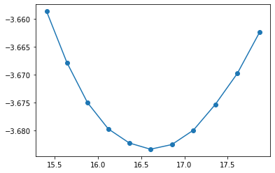
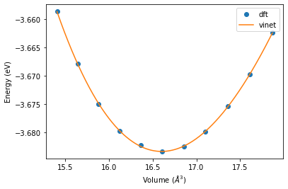

Workflow Murnaghan fit using VASP calculations¶
This workflow aims to calculate the equilibrium energy, volume and bulk modulus of Al from ab initio. Murnaghan fit is applied and VASP is used for the calculations.
from pyiron.project import Project
import matplotlib.pyplot as plt
import numpy as np
from pyiron_utility import run_EOS_vasp_jobs
from pyiron_utility import print_job_status
from pyiron_utility import print_cpu_time
pr = Project('EOS')
Setting up the necessary parameters
project_parameter = {'project': pr,
'element': 'Al',
'crystal_structure': 'fcc',
'supercell': 1,
'shift': 0.1, # experimental lattice constant is automatically assigned as the center point
'npoints': 11, # number of lattice constants between shifts -0.1 and 0.1
'xc': 'PBE', # VASP_related parameter
'encut': 250, # VASP_related parameter
'kmesh': 4, # VASP_related parameter
'ismear': 1, # VASP_related parameter
'sigma': 0.1, # VASP_related parameter
'EDIFF': 1e-6, # VASP_related parameter
'PREC': 'Acuurate', # VASP_related parameter
'cluster': 'cm', # cluster_realted parameter
'cpu_cores': 1 # cluster_related parameter
}
#pr.remove_jobs(recursive=True)
Setting up and running calculations
run_EOS_vasp_jobs(project_parameter = project_parameter)
ham_3_95Ang
2021-11-30 16:01:46,721 - pyiron_log - WARNING - The job ham_3_95Ang is being loaded instead of running. To re-run use the argument 'delete_existing_job=True in create_job'
2021-11-30 16:01:46,721 - pyiron_log - WARNING - The job ham_3_95Ang is being loaded instead of running. To re-run use the argument 'delete_existing_job=True in create_job'
ham_3_97Ang
2021-11-30 16:01:47,614 - pyiron_log - WARNING - The job ham_3_97Ang is being loaded instead of running. To re-run use the argument 'delete_existing_job=True in create_job'
2021-11-30 16:01:47,614 - pyiron_log - WARNING - The job ham_3_97Ang is being loaded instead of running. To re-run use the argument 'delete_existing_job=True in create_job'
ham_3_99Ang
2021-11-30 16:01:48,530 - pyiron_log - WARNING - The job ham_3_99Ang is being loaded instead of running. To re-run use the argument 'delete_existing_job=True in create_job'
2021-11-30 16:01:48,530 - pyiron_log - WARNING - The job ham_3_99Ang is being loaded instead of running. To re-run use the argument 'delete_existing_job=True in create_job'
ham_4_01Ang
2021-11-30 16:01:49,447 - pyiron_log - WARNING - The job ham_4_01Ang is being loaded instead of running. To re-run use the argument 'delete_existing_job=True in create_job'
2021-11-30 16:01:49,447 - pyiron_log - WARNING - The job ham_4_01Ang is being loaded instead of running. To re-run use the argument 'delete_existing_job=True in create_job'
ham_4_03Ang
2021-11-30 16:01:50,353 - pyiron_log - WARNING - The job ham_4_03Ang is being loaded instead of running. To re-run use the argument 'delete_existing_job=True in create_job'
2021-11-30 16:01:50,353 - pyiron_log - WARNING - The job ham_4_03Ang is being loaded instead of running. To re-run use the argument 'delete_existing_job=True in create_job'
ham_4_05Ang
2021-11-30 16:01:51,252 - pyiron_log - WARNING - The job ham_4_05Ang is being loaded instead of running. To re-run use the argument 'delete_existing_job=True in create_job'
2021-11-30 16:01:51,252 - pyiron_log - WARNING - The job ham_4_05Ang is being loaded instead of running. To re-run use the argument 'delete_existing_job=True in create_job'
ham_4_07Ang
2021-11-30 16:01:52,173 - pyiron_log - WARNING - The job ham_4_07Ang is being loaded instead of running. To re-run use the argument 'delete_existing_job=True in create_job'
2021-11-30 16:01:52,173 - pyiron_log - WARNING - The job ham_4_07Ang is being loaded instead of running. To re-run use the argument 'delete_existing_job=True in create_job'
ham_4_09Ang
2021-11-30 16:01:53,058 - pyiron_log - WARNING - The job ham_4_09Ang is being loaded instead of running. To re-run use the argument 'delete_existing_job=True in create_job'
2021-11-30 16:01:53,058 - pyiron_log - WARNING - The job ham_4_09Ang is being loaded instead of running. To re-run use the argument 'delete_existing_job=True in create_job'
ham_4_11Ang
2021-11-30 16:01:53,956 - pyiron_log - WARNING - The job ham_4_11Ang is being loaded instead of running. To re-run use the argument 'delete_existing_job=True in create_job'
2021-11-30 16:01:53,956 - pyiron_log - WARNING - The job ham_4_11Ang is being loaded instead of running. To re-run use the argument 'delete_existing_job=True in create_job'
ham_4_13Ang
2021-11-30 16:01:54,848 - pyiron_log - WARNING - The job ham_4_13Ang is being loaded instead of running. To re-run use the argument 'delete_existing_job=True in create_job'
2021-11-30 16:01:54,848 - pyiron_log - WARNING - The job ham_4_13Ang is being loaded instead of running. To re-run use the argument 'delete_existing_job=True in create_job'
ham_4_15Ang
2021-11-30 16:01:55,765 - pyiron_log - WARNING - The job ham_4_15Ang is being loaded instead of running. To re-run use the argument 'delete_existing_job=True in create_job'
2021-11-30 16:01:55,765 - pyiron_log - WARNING - The job ham_4_15Ang is being loaded instead of running. To re-run use the argument 'delete_existing_job=True in create_job'
print_job_status(project_parameter = project_parameter)
Total number of jobs is 12.
Finished jobs is 12.
Submitted jobs is 0.
Running jobs is 0.
Aborted jobs is 0.
print_cpu_time(project_parameter = project_parameter)
For current project 1 cores are used for calculations.
The shortest CPU time of finished jobs is 0.0000 in hours.
The longest CPU time of finished jobs is 0.0006 in hours.
The average CPU time of finished jobs is 0.0005 in hours.
Extracting data from the calculations
table = pr.create.table()
table.add.get_energy_free_per_atom
table.add.get_volume_per_atom
table.run()
2021-11-30 16:04:40,026 - pyiron_log - WARNING - The job table is being loaded instead of running. To re-run use the argument 'delete_existing_job=True in create_job'
2021-11-30 16:04:40,026 - pyiron_log - WARNING - The job table is being loaded instead of running. To re-run use the argument 'delete_existing_job=True in create_job'
plotting the data
df = table.get_dataframe()
df.sort_values(by="volume", inplace=True)
plt.plot(df.volume, df.energy_free, 'o-');

applying murnaghan fit
from pyiron.atomistics.master.murnaghan import EnergyVolumeFit
ev_fit = EnergyVolumeFit()
ev_fit = EnergyVolumeFit(df.volume, df.energy_free)
fit_dict = ev_fit.fit_eos_general(fittype='vinet')
fit_dict
{'fit_type': 'vinet',
'volume_eq': 16.602778428185392,
'energy_eq': -3.683416417191908,
'bulkmodul_eq': 80.27777317220281,
'b_prime_eq': 4.6650753105726475,
'least_square_error': array([7.06581343e-05, 4.58512252e-01, 4.27707542e-01, 4.91816963e-03])}
Plotting the original data and the fitted data
vol_lst = np.linspace(np.min(df.volume), np.max(df.volume), 1000)
plt.plot(df.volume, df.energy_free, 'o', label='dft')
plt.plot(vol_lst, ev_fit.vinet_energy(vol_lst, fit_dict['energy_eq'], fit_dict['bulkmodul_eq']/160.21766208, fit_dict['b_prime_eq'], fit_dict['volume_eq']), label='vinet')
plt.xlabel('Volume ($\AA ^ 3$)')
plt.ylabel('Energy (eV)')
plt.legend();

pr.pack(destination_path="save")